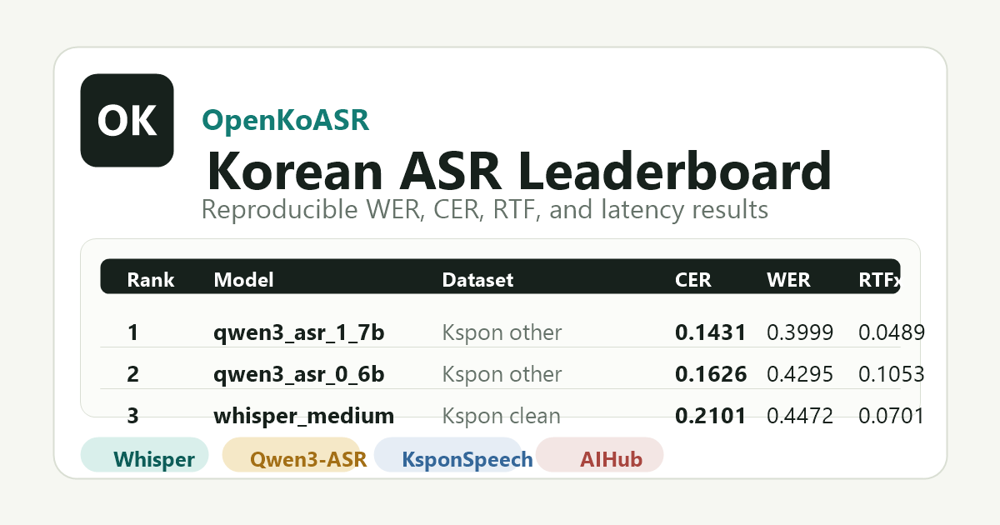

한국어 ASR 공개 리더보드
Whisper, Qwen3-ASR 등 공개 한국어 음성 인식 모델을 같은 데이터셋, 정규화, 지표로 비교합니다. 기본 순위에는 전체 evaluation samples로 생성한 결과만 표시합니다.

Results
Loading leaderboard data...
macro average
micro details
Whisper, Qwen3-ASR 등 공개 한국어 음성 인식 모델을 같은 데이터셋, 정규화, 지표로 비교합니다. 기본 순위에는 전체 evaluation samples로 생성한 결과만 표시합니다.

Loading leaderboard data...